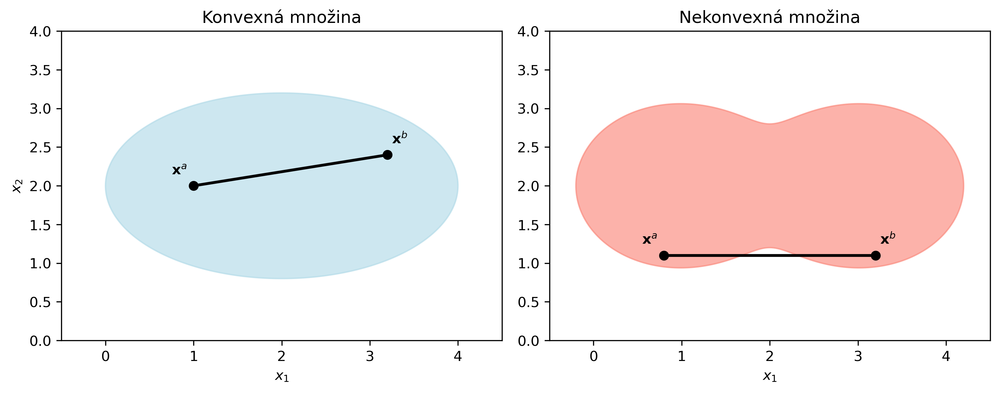
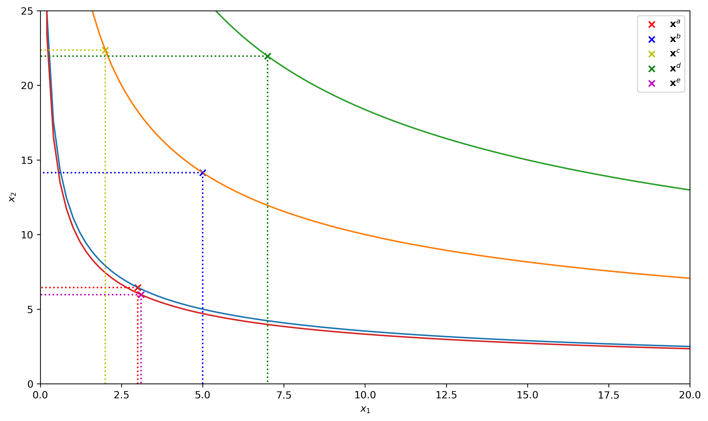
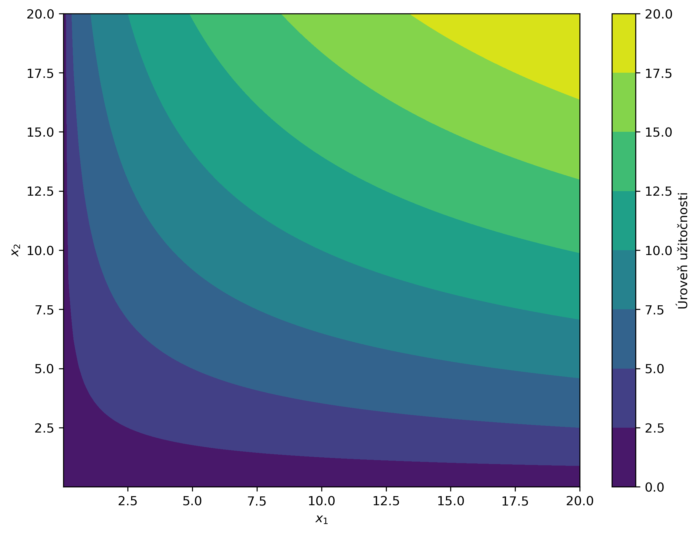
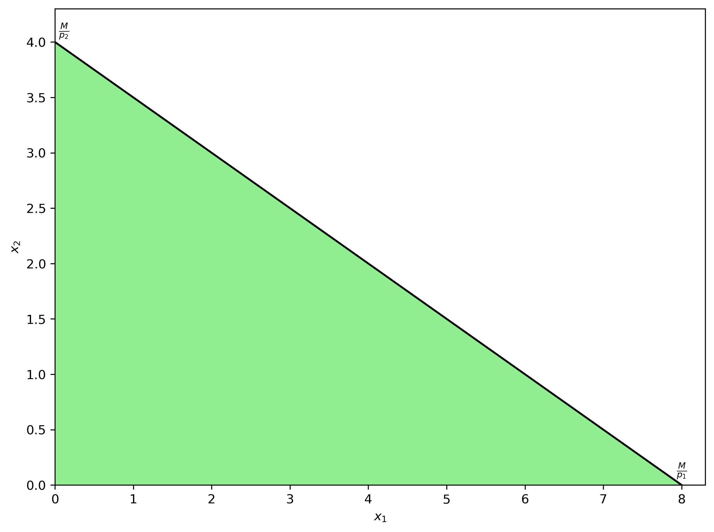
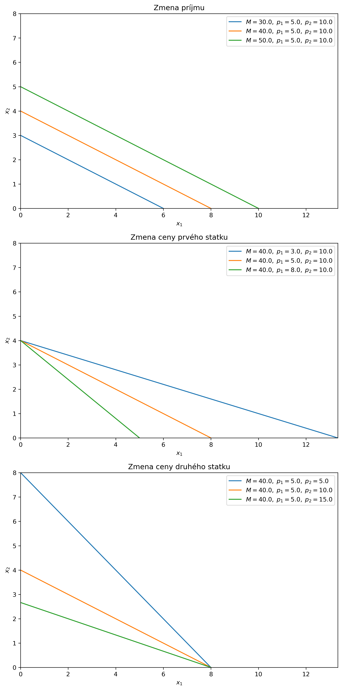
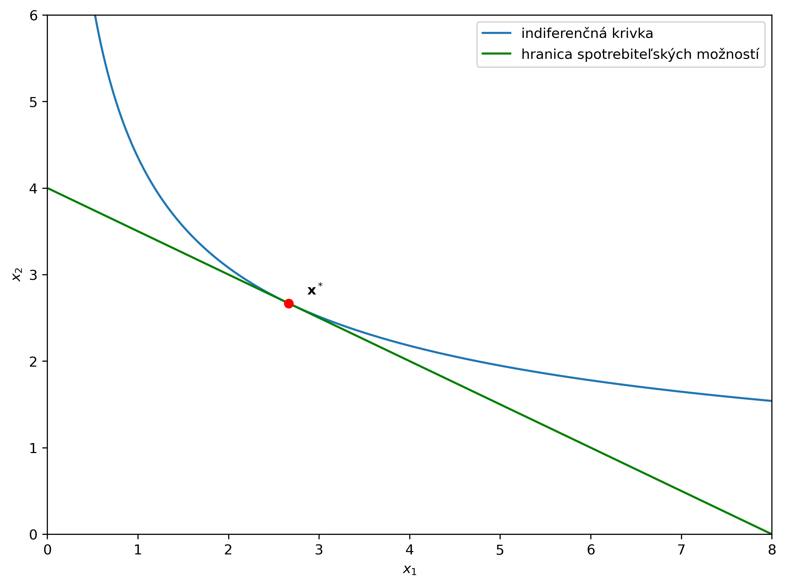

5. Správanie spotrebiteľa#
Firma vyrába statky; spotrebiteľ, teda zákazník firmy, ich spotrebúva.
Firma statky ponúka (Ponuka firmy); spotrebiteľ ich dopytuje.
Správanie spotrebiteľa charakterizujeme úlohou matematického programovania (Úloha na viazaný extrém), v ktorej sa spotrebiteľ usiluje maximalizovať svoj blahobyt vzhľadom na svoj rozpočet.
Blahobyt spotrebiteľa vyjadruje funkcia užitočnosti.
Rozpočet spotrebiteľa vyjadruje rozpočtová funkcia.
Existujú dva základné prístupy k modelovaniu správania spotrebiteľa:
formulácia preferencií spotrebiteľa a odvodenie funkcie užitočnosti za predpokladu racionálneho správania,
odvodenie preferencií z pozorovaných individuálnych výberov prostredníctvom určitých konzistentných predpokladov o preferenciách.
Prvý prístup sa označuje ako teória užitočnosti (utility theory) a druhý ako teória odhalených preferencií (revealed preference theory).
Na bakalárskej úrovni mikroekonómie sa zvyčajne využíva prvý prístup. Predpokladáme, že preferencie spotrebiteľa možno reprezentovať funkciou užitočnosti a že spotrebiteľ sa správa racionálne. Jeho cieľom je zvoliť taký spotrebný kôš, ktorý maximalizuje užitočnosť pri danom rozpočtovom obmedzení.
5.1. Existencia funkcie užitočnosti#
Spotrebiteľ spotrebúva niekoľko statkov. Môže zvažovať nákup rôznych kombinácií statkov. Takýmto kombináciám hovoríme spotrebiteľské koše.
Spotrebiteľský kôš Vektor spotreby rôznych statkov jedným spotrebiteľom v jednotkách statkov.
Množina spotrebiteľských možností Množina spotrebiteľských košov, ktoré sú pre spotrebiteľa prípustné.
Predpokladajme, že množina spotrebiteľských možností je
uzavretá a
konvexná.
Uzavretosť zabezpečuje existenciu optimálneho spotrebiteľského koša. Ak sa spotrebiteľ môže približovať k určitému spotrebiteľskému košu prostredníctvom postupnosti prípustných spotrebiteľských košov, potom je prípustný aj tento hraničný spotrebiteľský kôš.
Konvexnosť vyjadruje možnosť kombinovať spotrebiteľské koše. Ak sú spotrebiteľské koše \(\mathbf{x^a}\) a \(\mathbf{x^b}\) prípustné, potom je prípustný aj každý spotrebiteľský kôš tvaru
Geometricky to znamená, že úsečka spájajúca ľubovoľné dva prípustné spotrebiteľské koše leží celá v množine spotrebiteľských možností.
Na Obr. 5.1 je zobrazená konvexná a nekonvexná množina spotrebiteľských možností pre dva statky. Spotreba prvého statku je označená ako \(x_1\) a spotreba druhého ako \(x_2\).
Na ľavom paneli je zobrazená konvexná množina spotrebiteľských možností. Pre ľubovoľné dva spotrebiteľské koše \(\mathbf{x}^a\) a \(\mathbf{x}^b\) patrí do množiny aj každá ich konvexná kombinácia. Geometricky to znamená, že celá úsečka spájajúca body \(\mathbf{x}^a\) a \(\mathbf{x}^b\) leží v množine spotrebiteľských možností.
Na pravom paneli je zobrazená nekonvexná množina spotrebiteľských možností. Existujú v nej spotrebiteľské koše \(\mathbf{x}^a\) a \(\mathbf{x}^b\), pre ktoré časť úsečky spájajúcej tieto body leží mimo množiny.
V ďalšom texte bude množina spotrebiteľských možností určená rozpočtovým ohraničením spotrebiteľa (Rozpočet spotrebiteľa).

Obr. 5.1 Konvexná a nekonvexná množina spotrebiteľských možností#
- Preferencie
Schopnosť spotrebiteľa porovnávať spotrebiteľské koše z hľadiska ich žiaducnosti.
- Preferenčný vzťah
Vzťah medzi dvoma spotrebiteľskými košmi \(\mathbf{x}^a\) a \(\mathbf{x}^b\) z hľadiska preferencií spotrebiteľa.
O preferenčných vzťahoch predpokladáme
reflexívnosť; \(\forall \mathbf{x^a} \in \mathbb{X}, \mathbf{x^a} \succsim \mathbf{x^a}\) a
tranzitívnosť; \(\forall \mathbf{x^a}, \mathbf{x^b}, \mathbf{x^c} \in \mathbb{X}\), ak \(\mathbf{x^a} \succsim \mathbf{x^b}\) a \(\mathbf{x^b} \succsim \mathbf{x^c}\), potom \(\mathbf{x^a} \succsim \mathbf{x^c}\).
Reflexívnosť znamená, že ak spotrebiteľ porovnáva dva úplne rovnaké spotrebiteľské koše, uzná, že oba sú pre neho aspoň rovnako dobré.
Podľa tranzitívnej vlastnosti, ak spotrebiteľský kôš \(\mathbf{x^a}\) je aspoň tak dobrý ako \(\mathbf{x^b}\) a zároveň \(\mathbf{x^b}\) je aspoň tak dobrý ako \(\mathbf{x^c}\), potom kôš \(\mathbf{x^a}\) musí byť aspoň tak dobrý ako \(\mathbf{x^c}\).
Uveďme ďalšie označenie,
Vzťah dominancie možno zapísať dvoma spôsobmi (5.1)
Spotrebiteľ sa nevie rozhodnúť medzi košmi \(\mathbf{x^b}\) a \(\mathbf{x^c}\), pretože \(\mathbf{x^b}\) je aspoň tak dobrý ako \(\mathbf{x^c}\) a zároveň \(\mathbf{x^c}\) je aspoň tak dobrý ako \(\mathbf{x^b}\) (5.2). Hovoríme, že spotrebiteľ je voči týmto dvom košom indiferentný.
Vo vzťahu (5.3) spotrebiteľ preferuje spotrebiteľský kôš \(\mathbf{x}^a\) pred košom \(\mathbf{x}^d\). Kôš \(\mathbf{x}^a\) je aspoň tak dobrý ako \(\mathbf{x}^d\) a zároveň spotrebiteľ nie je voči týmto dvom košom indiferentný.
Ak spotrebiteľský kôš \(\mathbf{x}^a\) dominuje spotrebiteľskému košu \(\mathbf{x}^d\) (Dominancia a efektívnosť), potom je prirodzené predpokladať
Ďalšie predpoklady o preferenčných vzťahoch potrebné k odvodeniu funkcie užitočnosti sú:
Úplnosť; spotrebiteľ dokáže porovnať ľubovoľné dva spotrebiteľské koše. Pre každé dva spotrebiteľské koše \(\mathbf{x}^a\) a \(\mathbf{x}^b\) platí
alebo
alebo
Spojitosť; malé zmeny spotrebiteľského koša vedú len k malým zmenám preferencií spotrebiteľa.
Preferencie nazývame racionálne, ak sú reflexívne, tranzitívne a úplné.
Ak sú preferencie úplné, tranzitívne a spojité, potom na uzavretej množine spotrebiteľských možností existuje funkcia užitočnosti, ktorá ich reprezentuje. Spotrebiteľ tak dokáže všetkým spotrebiteľským košom priradiť číselné hodnoty tak, aby ich poradie zodpovedalo jeho preferenciám.
Obr. 5.2 zobrazuje rozhodovanie spotrebiteľa medzi dvoma statkami. Hovoríme o dvojrozmernom rozhodovacom priestore spotrebiteľa. Spotrebiteľský kôš označujeme vektorom
kde \(x_1\) je spotreba prvého statku a \(x_2\) je spotreba druhého statku.
Na obrázku je zobrazených päť spotrebiteľských košov \(\mathbf{x}^a\), \(\mathbf{x}^b\), \(\mathbf{x}^c\), \(\mathbf{x}^d\) a \(\mathbf{x}^e\).
Ak má spotrebiteľ úplné preferencie, dokáže porovnať ľubovoľné dva spotrebiteľské koše.
Na obrázku spotrebiteľ preferuje kôš \(\mathbf{x}^d\) pred košom \(\mathbf{x}^c\),
Spotrebiteľ je indiferentný medzi košmi \(\mathbf{x}^c\) a \(\mathbf{x}^b\),
Spotrebiteľ preferuje kôš \(\mathbf{x}^b\) pred košom \(\mathbf{x}^a\),
Ak sú preferencie tranzitívne, z týchto tvrdení vyplýva
a zároveň
Úplnosť preferencií znamená, že spotrebiteľ dokáže obdobným spôsobom porovnať ľubovoľnú dvojicu spotrebiteľských košov, nielen tie zobrazené na obrázku.
Spojitosť preferencií predpokladá, že malé zmeny spotrebiteľského koša vedú len k malým zmenám preferencií spotrebiteľa. Spotrebiteľ preto dokáže porovnať aj veľmi podobné spotrebiteľské koše. Napríklad môže porovnať kôš \(\mathbf{x}^a\) s košom \(\mathbf{x}^e\), ktorý obsahuje o málo viac prvého statku a o málo menej druhého statku.
Obr. 5.2 zobrazuje aj indiferenčné krivky.
- Indiferenčné krivky
množiny spotrebiteľských košov, voči ktorým je spotrebiteľ indiferentný.
Keďže
oba spotrebiteľské koše ležia na rovnakej indiferenčnej krivke.

Obr. 5.2 Spotrebiteľské koše a indiferenčné krivky#
Z vlastnosti spojitých preferencií vyplývajú dve vlastnosti indiferenčných kriviek:
indiferenčné krivky sú spojité,
medzi ľubovoľnými dvoma indiferenčnými krivkami existujú ďalšie indiferenčné krivky.
Spotrebiteľ vie porovnať každé dva spotrebiteľské koše z množiny spotrebiteľských možností.
Podľa Obr. 5.2 dokáže spotrebiteľ porovnať aj spotrebiteľské koše \(\mathbf{x}^a\) a \(\mathbf{x}^e\). Keďže neležia na rovnakej indiferenčnej krivke, spotrebiteľ voči nim nie je indiferentný. Zároveň sú tieto dva spotrebiteľské koše veľmi podobné, pretože sa nachádzajú na dvoch veľmi blízkych indiferenčných krivkách.
Keďže preferencie spotrebiteľa sú spojité, na množine spotrebiteľských možností existuje spojitá mapa indiferenčných kriviek. Takáto mapa je zobrazená na Obr. 5.3.

Obr. 5.3 Mapa indiferenčných kriviek#
Predpokladajme, že spotrebiteľ preferuje vyššiu spotrebu oboch statkov pred nižšou. Potom možno odvodiť aj ďalšie vlastnosti indiferenčných kriviek.
Spotrebiteľ preferuje spotrebiteľské koše ležiace na indiferenčných krivkách vzdialenejších od začiatku súradnicového systému pred košmi ležiacimi na indiferenčných krivkách bližších k začiatku súradnicového systému.
Podľa Obr. 5.2 platí
pretože spotrebiteľský kôš \(\mathbf{x}^a\) leží na vyššej indiferenčnej krivke než spotrebiteľský kôš \(\mathbf{x}^e\).
Na {numref}graf_mapa sú jednotlivé indiferenčné krivky rozlíšené farbou. Svetlejšie oblasti zodpovedajú vyšším úrovniam užitočnosti, a preto obsahujú spotrebiteľské koše, ktoré spotrebiteľ preferuje pred košmi v tmavších oblastiach.
Ak porovnávame dva spotrebiteľské koše s rovnakou spotrebou druhého statku \(x_2\), spotrebiteľ preferuje kôš s vyššou spotrebou prvého statku \(x_1\). V grafe sa preto pri pohybe vodorovne doprava dostávame na vyššie indiferenčné krivky.
Analogicky, ak porovnávame dva spotrebiteľské koše s rovnakou spotrebou prvého statku \(x_1\), spotrebiteľ preferuje kôš s vyššou spotrebou druhého statku \(x_2\). V grafe sa preto pri pohybe zvisle nahor dostávame na vyššie indiferenčné krivky.
Indiferenčné krivky sú (striktne) klesajúce.
Ak má spotrebiteľ zostať indiferentný medzi dvoma spotrebiteľskými košmi, zvýšenie spotreby jedného statku musí byť kompenzované znížením spotreby druhého statku.
Indiferenčné krivky sa nesmú pretínať.
Táto vlastnosť vyplýva z tranzitívnosti preferencií. Ak by sa dve indiferenčné krivky pretínali, bolo by možné zostrojiť spotrebiteľské koše, pri ktorých by došlo k porušeniu tranzitívnosti preferenčného vzťahu.
- Hraničná miera spotrebiteľskej substitúcie
vyjadruje, koľkých jednotiek druhého statku (\(x_2\)) sa musí spotrebiteľ vzdať, aby mohol zvýšiť spotrebu prvého statku (\(x_1\)) o jednotku a pritom zostal voči obom spotrebiteľským košom indiferentný.
Predpokladáme, že s rastom spotreby prvého statku hraničná miera spotrebiteľskej substitúcie klesá. Čím viac prvého statku spotrebiteľ spotrebúva, tým menej jednotiek druhého statku je ochotný obetovať za získanie ďalšej jednotky prvého statku.
Z tohto predpokladu vyplýva vlastnosť:
indiferenčné krivky sú (striktne) konvexné.
Indiferenčné krivky tvoria Vrstevnica funkcie užitočnosti spotrebiteľa
Čím je spotrebiteľ spokojnejší, tým vyššia je funkčná hodnota užitočnosti zobrazená indiferenčnou krivkou viac vzdialenejšia od začiatku súradnicového systému.
Ak je spotrebiteľov rozhodvací priestor dvojrozmerný, funkciu užitočnosti možno zapísať v tvare
Na Mapa indiferenčných kriviek je spotrebiteľova spokojnosť s košmi na stupnici od 0 (tmavomodré) po 20 (svetložlté).
Indiferenčné krivky tvoria Vrstevnica funkcie funkcie užitočnosti spotrebiteľa
Čím je spotrebiteľ spokojnejší, tým vyššia je hodnota funkcie užitočnosti a tým ďalej od začiatku súradnicového systému sa nachádza príslušná indiferenčná krivka.
Ak je rozhodovací priestor spotrebiteľa dvojrozmerný, funkciu užitočnosti možno zapísať v tvare
Na Obr. 5.3 sú farebne zobrazené úrovne funkcie užitočnosti. Tmavšie oblasti zodpovedajú nižším hodnotám užitočnosti, zatiaľ čo svetlejšie oblasti zodpovedajú vyšším hodnotám užitočnosti.
Každá indiferenčná krivka predstavuje množinu spotrebiteľských košov, ktorým funkcia užitočnosti priraďuje rovnakú hodnotu. Spotrebiteľ je preto voči všetkým spotrebiteľským košom ležiacim na tej istej indiferenčnej krivke indiferentný.
Z vlastností indiferenčných kriviek možno odvodiť vlastnosti funkcie užitočnosti;
keďže sú indiferenčné krivky spojité, funkcia užitočnosti je spojitá,
keďže sú indiferenčné krivky (striktne) klesajúce, funkcia užitočnosti je (striktne) rastúca v spotrebe všetkých statkov,
keďže sú indiferenčné krivky (striktne) konvexné, funkcia užitočnosti je (striktne) kvázikonkávna.
Kvázikonkávnosť vyjadruje preferenciu spotrebiteľa pre vyvážené spotrebiteľské koše. Spotrebiteľ spravidla uprednostňuje kombináciu viacerých statkov pred extrémom, akým je spotreba iba jedného z nich.
- Hraničná užitočnosť spotreby
multiplikátor užitočnosti podľa spotreby statku \(i\). Vyjadruje, ako zvýšenie funkčnej hodnoty užitočnosť, zapríčinené zvýšením spotreby statku \(i\).
Hraničná miera spotrebiteľskej substitúcie je sklon indiferenčnej krivky (Sklon vrstevnice) a podľa (1.16) ju vieme vyjadriť v tvare
5.2. Rozpočet spotrebiteľa#
Spotrebiteľ je obmedzený výškou svojho peňažného disponibilného rozpočtu \(M\) a cenami statkov
Príjem aj ceny sú vyjadrené v peňažných jednotkách (€).
Poznámka
Peňažný disponibilný rozpočet spotrebiteľa označujeme symbolom \(M\). V ďalšom texte budeme pre jednoduchosť hovoriť o rozpočte spotrebiteľa, pričom v mnohých situáciách ho možno interpretovať aj ako jeho disponibilný príjem.
Rozpočtové ohraničenie spotrebiteľa je
Po rozpísaní skalárneho súčinu získame
Ľavá strana vyjadruje celkové výdavky spotrebiteľa na spotrebný kôš \(\mathbf{x}\) a pravá strana jeho disponibilný rozpočet.
Spotrebiteľ môže zvoliť iba také spotrebiteľské koše, na ktoré celkové výdavky neprevyšujú jeho rozpočet. Množina všetkých spotrebiteľských košov spĺňajúcich rozpočtové obmedzenie sa je množina spotrebiteľských možností.
- Množina spotrebiteľských možností
je množina spotrebiteľských košov, ktorá vyhovuje rozpočtovému ohraničeniu (5.7).
- Hranica spotrebiteľských možností
Na hranici spotrebiteľských možností sa spotrebiteľovo rozpočtové ohraničenie spĺňa ako rovnosť;
Ak zúžime spotrebiteľský priestor na dva statky, môžeme rozpočtové ohraničenie zapísať v tvare
Na hranici spotrebiteľských možností platí
Po vyjadrení spotreby druhého statku získame
Množina spotrebiteľských možností v dvojrozmernom priestore je zobrazená zelenou farbou na Obr. 5.4.
Hranica spotrebiteľských možností je na obrázku zobrazená čiernou úsečkou. Každý bod na tejto úsečke predstavuje spotrebiteľský kôš, pri ktorom spotrebiteľ minie celý svoj rozpočet.
Body pod hranicou spotrebiteľských možností predstavujú spotrebiteľské koše, pri ktorých spotrebiteľ minie iba časť svojho príjmu. Body nad hranicou spotrebiteľských možností sú neprípustné, pretože ich náklady prevyšujú spotrebiteľov rozpočet.
Záporná hodnota sklonu hranice spotrebiteľských možností se rovná pomeru cien oboch statkov, $\( -\frac{dx_2}{dx_1}= \frac{p_1}{p_2}. \)$ Tento pomer interpretujeme ako hraničnú mieru rozpočtovej substitúcie.

Obr. 5.4 Hranica a množina spotrebiteľských možností#
Vo všeobecnosti možno hraničnú mieru rozpočtovej substitúcie medzi statkami \(i\) a \(j\) vyjadriť ako
Hranica spotrebiteľských možností závisí od príjmu spotrebiteľa a cien spotrebúvaných statkov;
zmena príjmu posúva hranicu spotrebiteľských možností,
zmena cien mení hraničnú mieru rozpočtovej substitúcie.

Obr. 5.5 Vplyv disponibilného rozpočtu a cien na hranicu spotrebiteľských možností#
Na Obr. 5.5 sú zobrazené zmeny hranice spotrebiteľských možností spôsobené zmenou disponibilného rozpočtu (príjmu) a cien statkov.
Horný panel zobrazuje vplyv zmeny rozpočtu. Rast príjmu posúva hranicu spotrebiteľských možností smerom od začiatku súradnicového systému, pokles rozpočtu ju posúva smerom k začiatku súradnicového systému.
Prostredný panel zobrazuje vplyv zmeny ceny prvého statku. Zmena ceny prvého statku mení sklon hranice spotrebiteľských možností a otáča ju okolo priesečníka s osou \(x_2\).
Dolný panel zobrazuje vplyv zmeny ceny druhého statku. Zmena ceny druhého statku mení sklon hranice spotrebiteľských možností a otáča ju okolo priesečníka s osou \(x_1\).
5.3. Správanie spotrebiteľa.#
Správanie spotrebiteľa možno charakterizovať úlohou matematického programovania v ktorej spotrebiteľ výberom koša maximalizuje svoj blahobyt vyjadrený funkciou užitočnosti
vzhľadom na rozpočtové ohraničenie
a vzhľadom na nezápornosť spotreby statkov
Úlohu riešime ako úlohu na viazaný extrém (Úloha na viazaný extrém).
Množina prípustných riešení je množina spotrebiteľských možností.
Hranica prípustných riešení je hranica spotrebiteľských možností.
Podľa podmienok prvého rádu (1.17) a (1.18)
optimálny spotrebiteľský kôš leží na hranici spotrebiteľských možností a
v optimálnom spotrebiteľskom koši sa hraničná miera spotrebiteľskej substitúcie rovná s hraničnou mierou rozpočtovej substitúcie
Ak optimálny bod neleží na hraniciach definičného oboru (optimálne hodnoty \(x_i^*>0\) pre všetky \(i\)), podmienky prvého rádu sú:
a
Na ľavej strane (5.10) je hraničná miera spotrebiteľskej substitúcie (5.5). Na pravej strane je hraničná miera rozpočtovej substitúcie.
Vzhľadom na vlastnosti preferencií je funkcia užitočnosti spojitá, rastúca a striktne kvázikonkávna. Rozpočtová funkcia je lineárna. Vzhľadom na striktne kvázikonkávnu funkciu užitočnosti a lineárne rozpočtové ohraničenie sú podmienky prvého rádu postačujúce na určenie globálneho optima.
5.3.1. Ekonomická interpretácia PPR#
Podľa (5.10) sa v bode optima hraničná miera spotrebiteľskej substitúcie rovná hraničnej miere rozpočtovej substitúcie.
Hraničnú mieru spotrebiteľskej substitúcie \(MRS\) interpretujeme ako internú spotrebiteľovu mieru substitúcie. Vyjadruje pomer, v akom je spotrebiteľ ochotný zamieňať dva statky bez zmeny svojho blahobytu.
Hraničnú mieru rozpočtovej substitúcie \(p_i / p_j \) interpretujeme ako externú, trhovú mieru substitúcie medzi statkami. Vyjadruje pomer, v akom možno statky zamieňať na trhu pri nezmenenom rozpočte spotrebiteľa.
Ak
potom je statok \(i\) vzhľadom na statok \(j\) trhovo drahší, než ako ho spotrebiteľ subjektívne hodnotí. Spotrebiteľ môže zvýšiť svoj blahobyt znížením spotreby statku \(i\) a zvýšením spotreby statku \(j\).
Ak
potom je statok \(i\) vzhľadom na statok \(j\) trhovo lacnejší, než ako ho spotrebiteľ subjektívne hodnotí. Spotrebiteľ môže zvýšiť svoj blahobyt zvýšením spotreby statku \(i\) a znížením spotreby statku \(j\).
V bode optima platí
pretože subjektívna miera substitúcie spotrebiteľa sa zhoduje s objektívnou mierou substitúcie určovanou trhom.
Na Obr. 5.6 je geometrická interpretácia úlohy spotrebiteľa v dvojrozmernom rozhodovacom priestore. Optimálny spotrebiteľský kôš zodpovedá bodu dotyku indiferenčnej krivky (modrá) a hranice spotrebiteľských možností (zelená).
Pripomeňme, že sklon indiferenčnej krivky zodpovedá hraničnej miere spotrebiteľskej substitúcie a sklon hranice spotrebiteľských možností zodpovedá hraničnej miere rozpočtovej substitúcie. V bode optima sa tieto sklony rovnajú, pretože indiferenčná krivka je v tomto bode tečnou k hranici spotrebiteľských možností.
Pre optimálny spotrebiteľský kôš preto platí (5.10).
V bode optima sa tak subjektívna miera substitúcie statkov spotrebiteľom zhoduje s objektívnou mierou substitúcie určovanou trhovými cenami.

Obr. 5.6 Geometrická interpretácia úlohy spotrebiteľa#
5.4. Riešené príklady#
5.4.1. Príklad: Správanie spotrebiteľa#
Spotrebiteľove preferencie charakterizuje funkcia užitočnosti v tvare
Nech spotrebiteľov rozpočet je 300 €, cena prvého statku 5 € a druhého 10 €.
Vyjadrite hraničnú mieru spotrebiteľskej substitúcie.
Vyjadrite hraničnú mieru rozpočtovej substitúcie.
Vypočítajte optimálnu spotrebu oboch statkov.
Zapíšte správanie spotrebiteľa úlohou matematického programovania.
Ako sa zmení hraničná miera rozpočtovej substitúcie a optimálny spotrebný kôš, ak sa spotrebiteľov rozpočet zvýši o 20 %?
Ako sa zmení hraničná miera rozpočtovej substitúcie a optimálny spotrebný kôš, ak sa cena prvého statku zníži o 40 %?
Ako sa zmení hraničná miera rozpočtovej substitúcie a optimálny spotrebný kôš, ak sa cena druhého statku zdvojnásobí?
5.4.1.1. Riešenie#
Hraničná miera spotrebiteľskej substitúcie je (5.5). Najsôr potrebujem hraničné užitočnosti.
Pre prvý statok
Pre druhý statok
Dosadením do (5.5) získame
Po úprave
Hraničná miera spotrebiteľskej substitúcie vyjadruje, koľkých jednotiek statku \(x_2\) je spotrebiteľ ochotný sa vzdať za dodatočnú jednotku statku \(x_1\) bez zmeny úrovne užitočnosti. Vidíme, že s rastom spotreby statku \(x_1\) a pri nezmenenej spotrebe statku \(x_2\) hodnota \(MRS\) klesá, čo je v súlade s predpokladom klesajúcej hraničnej miery spotrebiteľskej substitúcie.
Hraničná miera rozpočtovej substitúcie podiel cien oboch statkov \(p_1/p_2\).
Po dosadení cien
získame
Teda
Hraničná miera rozpočtovej substitúcie vyjadruje, že pri nezmenenom rozpočte môže spotrebiteľ zvýšiť spotrebu prvého statku o jednu jednotku iba za cenu zníženia spotreby druhého statku o polovicu jednotky.
Rovnaký výsledok dostaneme zo sklonu hranice spotrebiteľských možností
Správanie sporebiteľa zapíšeme úlohou
Optimálny spotrebný kôš získame riešením podmienok prvého rádu (5.9) a (5.10).
Dosadením do (5.10) získame
Po úprave
Zároveň spotrebiteľský kôš musí ležať na rozpočtovomn ohraničení (5.9)
Dosadením
získame
Preto
Optimálny spotrebiteľský kôš je
Spotrebiteľ pri optimálnej spotrebe nakúpi 20 jednotiek prvého statku a 20 jednotiek druhého statku.
Ak sa spotrebiteľov rozpočet zvýši o 20 %, nový rozpočet bude
Hraničná miera rozpočtovej substitúcie závisí iba na cenách statkov. Keďže sa ceny statkov nezmenili jej hodnota zostáva nezmenená
Na podmienke prvého rádu
sa nič nezmení a naďalej platí
Druhá podmienka sa zmení
po dosadení získame
Preto
Nový optimálny spotrebiteľský kôš je
V porovnaní s pôvodným optimálnym spotrebným košom
sa spotreba oboch statkov zvýšila o 20 %.
Spotreba oboch statkov sa zvýši v rovnakom pomere ako rozpočet.
Ak sa cena prvého statku zníži o 40 %, nová cena bude
Cena druhého statku a rozpočet sa nemenia
Hraničná miera rozpočtovej substitúcie je
Po dosadení nových cien dostaneme
Teda
V porovnaní s pôvodnou hodnotou 0,5 sa hraničná miera rozpočtovej substitúcie znížila. Prvý statok sa stal relatívne lacnejším v porovnaní s druhým statkom.
Optimálny spotrebiteľský kôš
Podľa podmienky optima musí platiť
Po dosadení
Po odvodení \(x_2\):
Tento vzťah dosadíme do ďalšej podmienky
Po dosadení
Preto
Optimálny spotrebiteľský kôš je
Spotreba prvého statku sa zvýši, pretože sa stal relatívne lacnejším, zatiaľ čo optimálna spotreba druhého statku zostáva nezmenená.
Ak sa cena druhého statku zdvojnásobí, nová cena bude
Cena prvého statku a rozpočet sa nemenia
Hraničná miera rozpočtovej substitúcie je
V porovnaní s pôvodnou hodnotou 0,5 sa hraničná miera rozpočtovej substitúcie znížila.
Optimálny spotrebiteľský kôš
Podľa podmienky optima musí platiť
Keďže
dostaneme
Po úprave
Tento vzťah dosadíme do hranice spotrebiteľských možností
Po dosadení
Preto
Optimálny spotrebiteľský kôš je
Spotreba druhého statku klesne na polovicu, pretože sa stal relatívne drahším. Spotreba prvého statku zostane nezmenená.
5.4.1.2. Python#
Použité knižnice sú nasledovné:
from sympy import symbols, diff, solve, simplify
Zadanie príkladu.
x1, x2 = symbols('x1,x2',positive=True)
p1 = 5
p2 = 10
M = 300
u = x1**(1/3)*x2**(2/3)
rozpocet = p1*x1 + p2*x2 - M
Hraničná miera spotrebiteľskej substitúcie.
MRS = simplify(diff(u,x1 )/ diff(u,x2))
print("Hraničná miera spotrebiteľskej substitúcie")
print(MRS)
Hraničná miera spotrebiteľskej substitúcie
0.5*x2**1.0/x1**1.0
Hraničná miera rozpočtovej substitúcie.
MRB = p1/p2
print("Hraničná miera rozpočtovej substitúcie")
print(MRB)
Hraničná miera rozpočtovej substitúcie
0.5
Optimálny spotrebiteľský kôš.
kos = solve([MRS-MRB,
rozpocet],
[x1,x2],
dict=True
)
kos = kos[0] if type(kos) is list else kos
print("Optimálny spotrebiteľský kôš")
kos
Optimálny spotrebiteľský kôš
{x1: 20.0000000000000, x2: 20.0000000000000}
Zmena M z 300 na 360.
M_5 = M*1.2
rozpocet5 = p1*x1+p2*x2-M_5
print("Nová hodnota hraničnej miery rozpočtovej substitúcie")
print(MRB)
print()
kos5 = solve([MRS-MRB,
rozpocet5],
[x1,x2],
dict=True
)
kos5 = kos5[0] if type(kos5) is list else kos5
print("Optimálny spotrebiteľský kôš")
kos5
Nová hodnota hraničnej miery rozpočtovej substitúcie
0.5
Optimálny spotrebiteľský kôš
{x1: 24.0000000000000, x2: 24.0000000000000}
Zníženie ceny prvého statku o 40 %.
p1_6 = p1*0.6
rozpocet6 = p1_6*x1+p2*x2-M
MRB6 = p1_6/p2
print("Nová hodnota hraničnej miery rozpočtovej substitúcie")
print(MRB6)
print()
kos6 = solve([MRS-MRB6,
rozpocet6],
[x1,x2],
dict=True
)
kos6 = kos6[0] if type(kos6) is list else kos6
print("Optimálny spotrebiteľský kôš")
kos6
Nová hodnota hraničnej miery rozpočtovej substitúcie
0.3
Optimálny spotrebiteľský kôš
{x1: 33.3333333333333, x2: 20.0000000000000}
Zdvojnásobenie ceny druhého statku.
p2_7 = p2*2
rozpocet7 = p1*x1+p2_7*x2-M
MRB7 = p1/p2_7
print("Nová hodnota hraničnej miery rozpočtovej substitúcie")
print(MRB7)
print()
kos7 = solve([MRS-MRB7,
rozpocet7],
[x1,x2],
dict=True
)
kos7 = kos7[0] if type(kos7) is list else kos7
print("Optimálny spotrebiteľský kôš")
kos7
Nová hodnota hraničnej miery rozpočtovej substitúcie
0.25
Optimálny spotrebiteľský kôš
{x1: 20.0000000000000, x2: 10.0000000000000}
5.5. Neriešené príklady#
5.5.1. Príklad: Správanie spotrebiteľa#
Spotrebiteľove preferencie charakterizuje funkcia užitočnosti v tvare
Nech spotrebiteľov rozpočet je 800 €, cena prvého statku 10 € a druhého 10 €.
Vyjadrite hraničnú mieru spotrebiteľskej substitúcie.
Vyjadrite hraničnú mieru rozpočtovej substitúcie.
Vypočítajte optimálnu spotrebu oboch statkov.
Ako sa zmení hraničná miera rozpočtovej substitúcie a optimálny spotrebný kôš, ak sa spotrebiteľov rozpočet zníži na polovicu?
Ako sa zmení hraničná miera rozpočtovej substitúcie a optimálny spotrebný kôš, ak sa cena prvého statku zdvojnásobí?
Ako sa zmení hraničná miera rozpočtovej substitúcie a optimálny spotrebný kôš, ak sa cena druhého statku zníži o 20 %?
5.5.2. Príklad: Spotreba troch statkov#
Spotrebiteľove preferencie charakterizuje funkcia užitočnosti v tvare
Nech spotrebiteľov rozpočet je 600 €, cena prvého statku 6 €, druhého 4 €.
Vypočítajte optimálny spotrebiteľský kôš.
5.5.3. Príklad: Funkcia užitočnosti v semilogaritmickom tvare#
Spotrebiteľove preferencie charakterizuje funkcia užitočnosti v tvare
Nech spotrebiteľov rozpočet je 600 €, cena prvého statku 7,50 € a druhého 7,50 €.
Vypočítajte optimálny spotrebiteľský kôš.
5.5.4. Príklad: Indiferenčné krivky sú kruhy#
Spotrebiteľove preferencie charakterizuje funkcia užitočnosti v tvare
Nech spotrebiteľov rozpočet je 100 €, cena prvého statku 4 € a druhého 8 €.
Vypočítajte optimálny spotrebiteľský kôš.